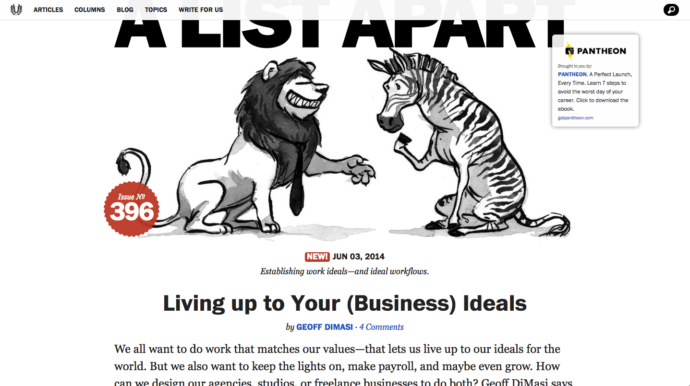
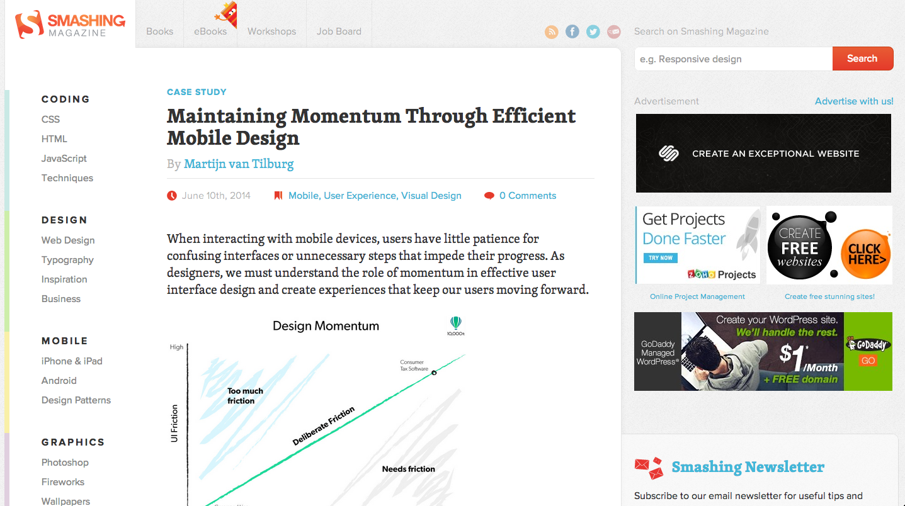
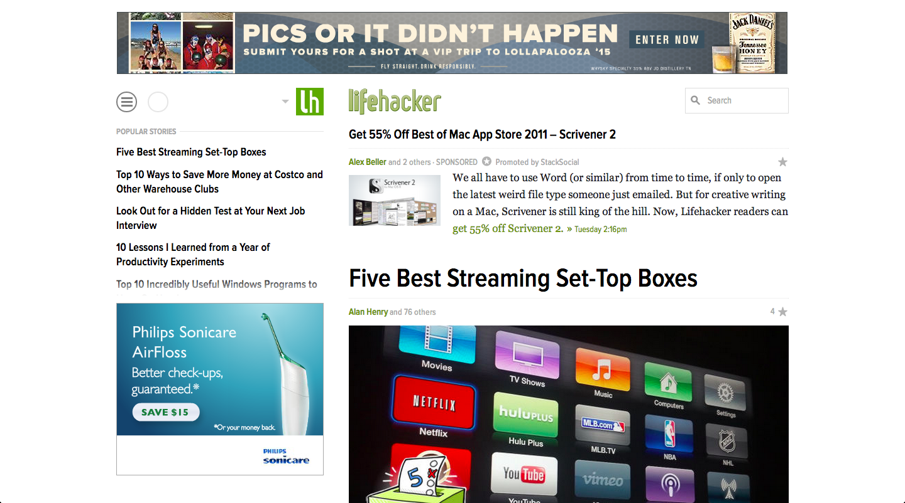

A List Apart
A List Apart has an extremely clean layout. They make the content be the focus of the site. They provide many articles related to the web design and development community. When you visit the site, you will right away notice the featured article and image to go along with. They do have a sponsored ad that is usually sitting in the upper right part of the screen, but it doesn't pull you away from the article. The navigation is simple and easy to understand. You can spend quite some time just reading article after article. The site does sell its books, both paper and digital. I have purchased a couple of them and I found them to be very well written and pack a lot of information into a little easy to consume book.
I would describe this site as simple, understandable, professional, colorless, and bold.

Smashing Magazine
Smashing Magazine is also aimed at the web design and development community. When you visit the homepage, for me, my attention is drawn to the adds on the right side of the screen. They are nicely arranged but still take up a lot of the screen and distract from the content. Once past that the rest of the site is full of very useful information and the articles are laid out easy to read. The site itself is very easy to navigate with the vertical navigation bar on the left side of the screen. They also sell their books and offer workshops. I have never bought anything off of this site, so I’m not sure how the process is for them. Over all the site is fun to be on and most every time I visit it I can learn something new, making it a must have in my bookmarks bar.
I would describe this site as flat, professional, pastel, clean, and understandable.

Lifehacker
On to my guilty pleasure site. Lifehacker is a blog to hack
everyday life. Ranging from productivity tips, to money saving tips, to even how to properly set up your wireless network at home. As much as I love this site and the small projects it has to offer, I am not a fan of its design. It has way too many ads right in your face from the get go. Top banner add, sidebar add and occasionally adds between posts. I have made the mistake in the past of thinking I’m clicking on an article to read more, and behold, I’m taken to a site that sells software to speed up
your computer. I feel its the equivalent of the stores with sign wavers on the street. All bashing aside, there is a ton and a half of information on the site and is super fun to read. Other than the ads the site doesn’t sell you anything, its just a fun and ad filled blog.
I would describe this site as reverse, cluttered, distracting, dull, and full-o-ads.
